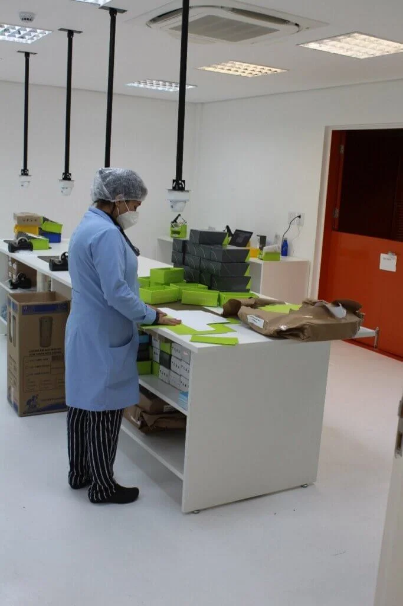
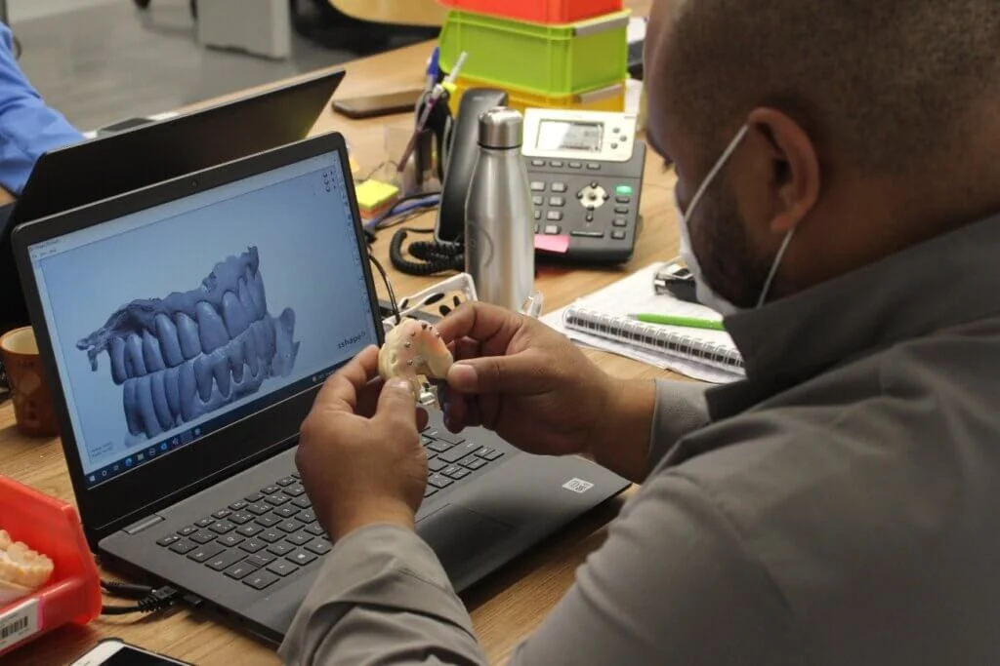
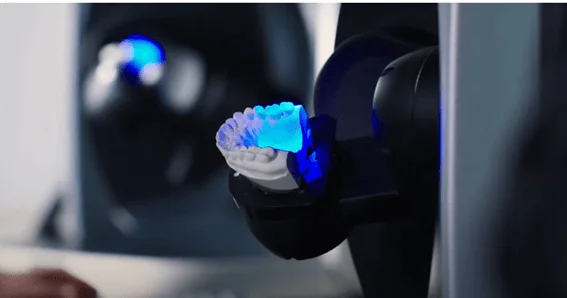
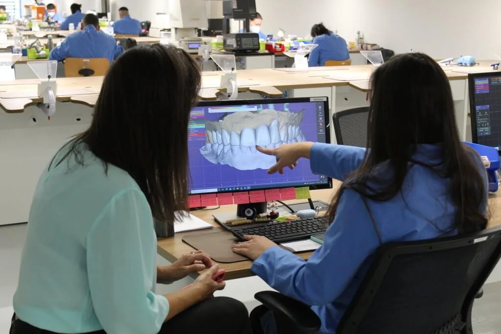
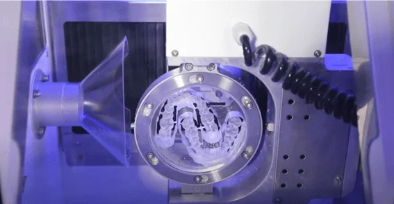
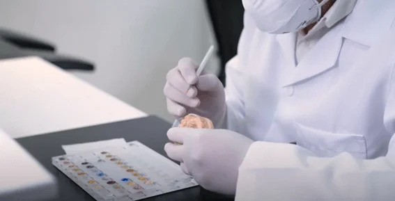

Laboratório de prótese dentária: benefícios para seu consultório

O laboratório de prótese dentária pode ser considerado o melhor parceiro de um consultório odontológico. E por que? De forma bem direta, porque a experiência dos técnicos protéticos e os recursos tecnológicos disponíveis em um laboratório de prótese ajudam bastante nos resultados dos tratamentos do cirurgião-dentista. Conheça adiante:
- As principais funções de um laboratório de prótese dentária
- O perfil dos profissionais do laboratório de prótese dentária
- As vantagens da parceria laboratório de prótese – consultório odontológico
Na sequência, reserve um tempinho (menos de 2 minutos!) para assistir ao vídeo institucional de um laboratório de prótese dentária que combina times especializados com alta tecnologia. Você vai descobrir como um laboratório protético oferece todos os recursos para que cirurgiões-dentistas tenham as melhores soluções protéticas ao seu alcance.
O que faz um laboratório de prótese dentária
Por definição, o laboratório de prótese dentária confecciona elementos protéticos a pedido de cirurgiões-dentistas, para que eles finalizem os tratamentos em suas clínicas. Como cada caso é único, a relação entre laboratório de prótese e cirurgião-dentista precisa estar em sintonia para definirem a melhor solução protética. O laboratório de prótese dentária é organizado em setores e muitos deles participam do processo de confecção de uma prótese. Em alguns laboratórios, as solicitações analógicas ou digitais seguem, como regra, o caminho:
-
Desinfecção de materiais analógicos encaminhados por consultório.

-
Análise do pedido, por técnicos protéticos experientes. Muitas definições da solução protética já vêm do consultório, como cor, material e tipo de elemento protético. Mas pode haver mudança, discutida sempre entre cirurgião-dentista e especialista do laboratório de prótese.

-
Se o material aprovado for analógico, passa pelo setor de gesso para confecção do modelo e, depois, segue para o setor de escaneamento.

-
Se o material aprovado for digital (arquivo do escaneamento), vai para o setor de CAD, que fará o detalhamento dos elementos protéticos, a partir do material escolhido e do processo de confecção – fresagem ou impressão 3D.

-
O projeto digital é encaminhado ao respectivo setor de confecção da prótese propriamente dita. Nesta etapa há dezenas de particularidades da produção, mas o importante é entender que há um nível alto de complexidade e de especialização em cada etapa.

-
Por fim, o elemento protético segue para os setores de acabamento e de qualidade, para aprovação.

-
Ao receber o serviço concluído pelo laboratório de prótese dentária, o cirurgião-dentista avalia a necessidade de ajustes com o paciente. Claro que trabalhos bem executados no laboratório dispensam muitos ajustes e “refação”.
Os profissionais de um laboratório de prótese dentária
Dentro dos setores diretamente ligados à confecção de prótese dentária, há técnicos protéticos e cirurgiões-dentistas. Entre os técnicos protéticos, muitos têm longa experiência com diferentes etapas do processo de confecção. Conhecem o que há de mais recente em termos de tecnologia de produção e também sobre os materiais. Há laboratórios de prótese dentária que oferecem constantes cursos de aprimoramento tanto para seus colaboradores como para cirurgiões-dentistas (clientes ou não). A intenção é sempre a mesma: selecionar os melhores especialistas para que todos os envolvidos na confecção da prótese aprofundem suas técnicas e aprendam sobre as novidades do mercado odontológico.
Os benefícios da parceria laboratório de prótese dentária – consultório odontológico
O objetivo de qualquer atendimento odontológico é resolver um problema do paciente. Quanto mais profissionais experientes e especializados se debruçam em busca da melhor solução protética, maior o sucesso do tratamento. Com esse foco, construir uma relação de parceria com o laboratório de prótese dentária só traz vantagens ao cirurgião-dentista. Seguem algumas delas:
Técnicos protéticos especializados
É ótimo poder trocar ideias e esclarecer dúvidas com alguém que tenha vivência sobre materiais, equipamentos novos e outros detalhes que podem influenciar na escolha da solução protética.
Otimização do tempo clínico.
Quando o cirurgião-dentista solicita o trabalho ao laboratório de prótese dentária, consegue se dedicar a outros pacientes e assuntos de interesse pessoal, em vez de gastar tempo na confecção de elementos protéticos.
Maior precisão e agilidade na confecção da prótese
Mesmo que o cirurgião-dentista tenha um assistente para se dedicar ao trabalho protético no consultório, são tantos os conhecimentos técnicos que precisam ser dominados, que as chances de retrabalho e de mais tempo dedicado a isso são bem maiores numa clínica. No laboratório de prótese, os processos amplamente testados, validados e as equipes com vários técnicos protéticos tornam a confecção mais ágil.
Menor investimento em equipamentos específicos para confecção protética
Ao se tornar parceiro de um laboratório de prótese dentária, o cirurgião-dentista pode direcionar seus investimentos para melhorias e atualizações diretamente relacionadas com o atendimento clínico. Esses recursos são notados diretamente pelos pacientes.
Domínio da odontologia digital
É importante que o laboratório tenha infraestrutura de última geração, com o que há de mais tecnológico em termos de fresadoras, impressoras 3D, materiais e processos. Softwares voltados para o planejamento do trabalho protético devem ser operados por técnicos especialistas que conseguem trabalhar em conjunto com o cirurgião-dentista a fim de traçar as melhores estratégias para o tratamento.
Comunicação clínico-laboratorial simplificada
Através de ferramentas de fácil acesso, o cirurgião-dentista otimiza a comunicação com o laboratório de prótese. Já existem plataformas desenvolvidas exclusivamente para isso, que tornam as trocas de informações mais assertivas, permitem o acompanhamento do status de cada solicitação, o gerenciamento do histórico de pacientes e até agilizam a conversa para esclarecer dúvidas pontuais. Tudo num único ambiente de acesso digital.